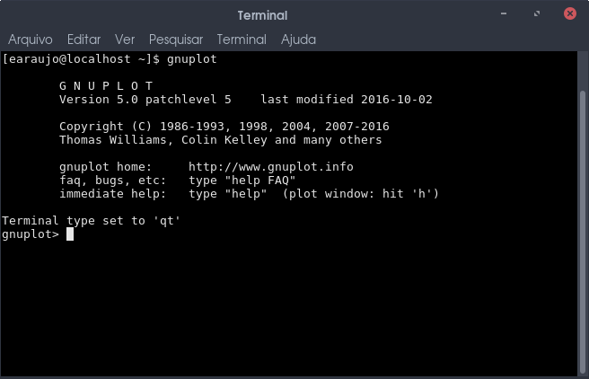
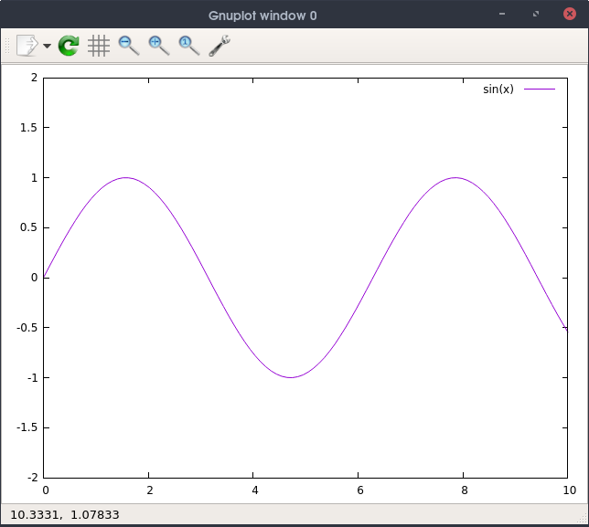
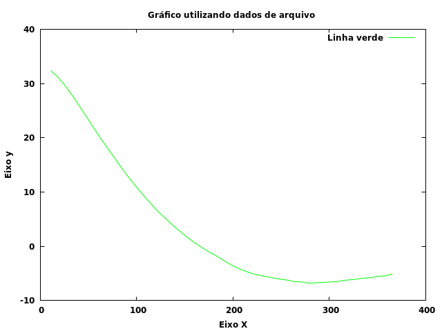
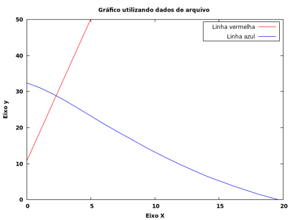

Embora receba em seu nome o termo GNU, essa ferramenta não possui uma licença ligada a GPL e muito menos possui relação com o projeto GNU. O Gnuplot trata-se de uma freeware, ou seja, você não precisa pagar para utilizá-lo mas também não possui permissão para modificar o seu código fonte1.
O gnuplot é uma ferramenta multiplataforma de linha de comando para criação de gráficos. Foi criado para auxiliar estudantes e cientistas a visualizar de forma interativa dados e funções matemáticas. Outras aplicações como o Octave2, por exemplo, utiliza o gnuplot como engine para plotar gráficos.
Ele dá suporte a plotagem de gráficos 2D, 3D e gif, e scripts podem ser utilizados. Scripts? Sim, scripts. O legal de trabalhar com essa ferramenta por linha de comando é a possibilidade de plotar gráficos tanto de forma interativa quanto por meio de scripts. E é isso o que veremos neste post.
Instalação do gnuplot
O download do gnuplot pode ser realizado em seu repositório no sourceforget (repositório gnuplot). Em sistemas Linux é comum que o gnuplot esteja em seus repositórios. Então, para instalá-lo basta seguir um dos seguintes comandos:
Para dpkg (exemplo: Debian):
$ sudo apt-get install gnuplot
Para rpm (exemplo: Fedora):
$ sudo dnf install gnuplot
Executando o gnuplot
Após a instalação, no terminal, podemos executar o gnuplot da seguinte maneira: $ gnuplot. Na forma interativa podemos inserir alguns comandos e o gráfico só será plotado ao inserir o comando plot.

Uma outra forma de utilizá-lo é através de scripts com extensão .plt e que segue o seguinte formato de execução:
$ gnuplot arquivo.plt
Exemplos Práticos
Aqui é apresentado três exemplos de utilização do gnuplot. Não é a intenção decifrar linha por linha dos escripts, mas sim, dar noção de funcionamento da ferramenta e plotagem dos gráficos. O primeiro exemplo irá abordar o uso do gnuplot via linha de comando e os dois últimos via scripts.
Gráfico da função seno
Esse primeiro exemplo é algo bem básico, apenas para familiarização, que podemos trabalhar direto no terminal. Acessando o gnuplot realizamos a plotagem da função seno que abrirá uma janela apresentando o gráfico dessa função. Logo após, temos a inserção de dois comandos responsáveis por setar os intervalos em valores para os eixos x e y. Para que essas alterações possam ser visualizadas faz-se necessário um replot.
$ gnuplot
gnuplot> plot sin(x)
gnuplot> set xrange [0:10]
gnuplot> set yrange [-2:2]
gnuplot> replot
Através da janela do gnuplot existe a possibilidade de salvar o gráfico em formato PDF, SVG e imagem.
O resultado:

Utilizando dados de arquivo
Neste exemplo trabalhamos com dados de um arquivo externo, que foi denominado de dados.txt, e o seu conteúdo é mostrado a seguir:
10.835 32.394
18.714 31.073
26.593 29.393
34.472 27.467
42.352 25.353
50.231 23.227
58.110 21.067
65.989 19.013
73.868 17.078
81.748 15.070
89.627 13.188
97.506 11.401
105.385 9.723
113.264 8.132
121.144 6.581
129.023 5.268
136.902 3.964
144.781 2.781
152.660 1.627
160.540 0.621
168.419 -0.317
176.298 -1.153
184.177 -1.925
192.056 -2.820
199.936 -3.599
207.815 -4.235
215.694 -4.780
223.573 -5.211
231.452 -5.484
239.332 -5.752
247.211 -6.004
255.090 -6.185
262.969 -6.490
270.848 -6.566
278.728 -6.783
286.607 -6.702
294.486 -6.634
302.365 -6.554
310.244 -6.436
318.124 -6.213
326.003 -6.103
333.882 -5.890
341.761 -5.789
349.640 -5.545
357.520 -5.442
365.399 -5.113
As colunas representam os eixos cartesianos x e y, respectivamente. O script para a construção do gráfico foi denominado de dados.plt, onde a fonte escolhida para o gráfico foi Verdana em negrito de tamanho 9. Diferente do exemplo anterior, este salva o gráfico em imagem com o nome de dados.png e possui um enconding que pode ser necessário para mostrar palavras acentuadas e o "ç". Nele também foi configurado para que os valores do eixo x sejam mostrados de 100 em 100 e os do eixo y de 10 em 10. Por fim, é inserido o arquivo que possui os dados a serem apresentados graficamente, assim como o nome da linha e a sua cor.
set terminal pngcairo enhanced font 'Verdana-Bold,9'
set output 'dados.png'
set encoding iso_8859_1
set title "Gráfico utilizando dados de arquivo"
set xlabel "Eixo X"
set ylabel "Eixo y"
set xtics 100
set ytics 10
plot "dados.txt" title "Linha verde" lc rgb "green" with lines
O resultado:

Utilizando dados de mais de um arquivo
Aqui o arquivo dados.txt foi dividido em outros dois, onde um possui somente a primeira coluna e outro somente a segunda coluna. O script anterior também foi alterado setando intervalos para os eixos cartesianos iniciando-os pelo valor zero. E a legenda do gráfico recebeu estilo de box e espaçamento. Observe que os arquivos foram inseridos dentro do mesmo plot.
set terminal pngcairo enhanced font 'Verdana-Bold,9'
set output 'dados2.png'
set encoding iso_8859_1
set title "Gráfico utilizando dados de arquivo"
set xlabel "Eixo X"
set ylabel "Eixo y"
set xrange [0:20]
set yrange [0:50]
set key top font "2" box 3 spacing 3
plot "dados1.txt" title "Linha vermelha" lc rgb "red" with lines,\
"dados2.txt" title "Linha azul" lc rgb "blue" with lines
O resultado:

Mais informações
Para maiores informações acerca de software é sempre importante verificar a sua man page, no caso: $ man gnuplot
E, logicamente, a documentação (gnuplot.pdf) presente no seu site oficial, onde além da documentação consta alguns exemplos (demo gnuplot) para testes e aprendizagem.
Para quem prefere livros, duas recomendações são feitas pelo site oficial do gnuplot. São eles: Phillips, L. gnuplot Cookbook. Packt Publishing, 2012 Janert, P. K. Gnuplot in Action - Understanding Data with Graphs. Manning Publications, 2ª Ed., 20163.
Finalizando...
Aqui tratamos de forma breve sobre uma ferramenta desenvolvida para o meio acadêmico, mas que sem dúvidas pode ser utilizada em outros contextos. Como apresentado, a sua instalação é simples e a sua aprendizagem pode demadar algum tempo dependendo dos estilos que você deseja aplicar em seus gráficos.
E aí? Você já conhecia o Gnuplot? Já o utilizou? Conhece alguma outra ferramenta alternativa? Pois conte para gente a sua experiência e/ou opinião nos comentários. O seu feedback é sempre bem-vindo.
Referências
1 http://www.gnuplot.info/faq/faq.html#x1-120001.7 2 https://www.gnu.org/software/octave/ 3 http://gnuplot.info/books.html
Go Top
comments powered by Disqus